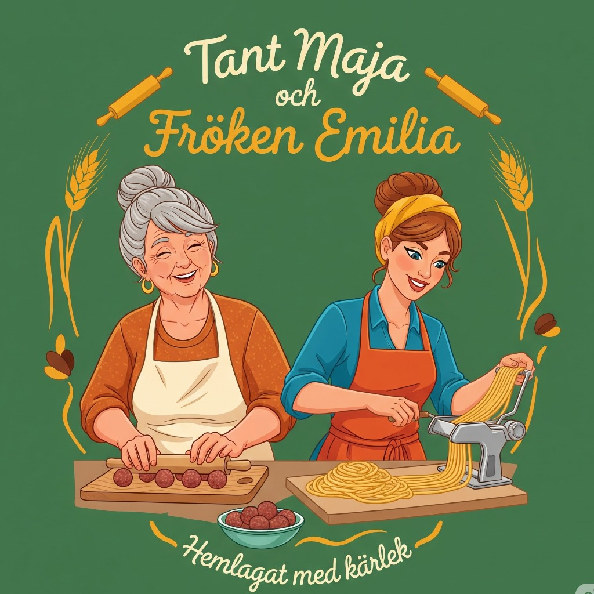

BankOmatBankOmat Seaside
- BIFF Á LA LINDSTRÖM
- med rödvinssås, persiljasmör, saltgurka och stekt potatis
- KALOPSGRYTA
- med rödbetor och kokt potatis
- STEKT KALVLEVER
- CITRON- OCH VITVINSPOCHERAD GÖSFILÉ
- med gräslökssås, spenat, citron och kokt potatis
- DAGENS PASTA
- Pasta fläskfilé med pepparsås och champinjoner
GG GHB German Beer Hall
GHB German Beer Hall
- Isterband med dillstuvad potatis och rödbetor.
- Kycklingspett serveras med ris, tzatziki, rödvinssås och grön sparris.
- Strömmingsfilé med skirat smör, potatismos, gröna ärtor och rårörda lingon.
- Pasta Alfredo med friterad kyckling.
- Halloumiburgare med chipotlemajonnäs, sallad, rödlök, gurka, tomat, pommes, coleslaw och saltgurka.
- Falafel med pommes och hummus.
TM

Tant Maja & Fröken Emilia- Mirza Ghasemi
- Köttbullar med potatismos,gräddsås och limgonröra
- Zereshk polo(saffran kyckling)
- Gormehsabzi
- Kebab Tabei
- Kukusabzi
- Dolmar alt.veg
- Lasagne al forno alt,veg
- Pasta bolognese
- Pasta carbonara
- Tryffel pasta
IG Indian Garden
Indian Garden
- Kyckling Tikka Butter Masala
- Mixed Kyckling Tikka Sizzlar
- Tandoori Kyckling Achari Karai
- Kyckling Bashanti
- Palak Paneer
- Lamm Sambal
- Nordic Salmon Mango Sesame
- Mix Vegetable Curry (Vegan/ Vegetarisk)
- Mixed Thali
Samma lunchrätter varje vardag, 11–14.
Visa menyHC Haandi curry & streetfood
Haandi curry & streetfood
- Chicken Tikka Butter Masala (Mild)
- Klassisk gryta med kycklingfilé, krossade cashewnötter, lök,
- grädde och smörfrästa kryddor
- Chicken Karai (Stark)
- Gryta med kycklingfilé tillagad i currysås med paprika, lök, ingefära
- tomat och färsk koriander
- Lamm Balti (Medel starkt)
- Gryta med lammbitar i masalasås och currysås med tomat,koriander
- och bengaliska kryddor.
- Mahananda River curry (Mild)
- Lax med kokosås och citron
- Palak Panir (Medel starkt)
- Hemgjord färskost tillagad med bladspenat,tomat,vitlök i currysås.
- Mixed Daal (Medel starkt)
- Blandade linser tillagade i currysås med, sambal, vitlök ,färsk koriander
Menyn är en PDF från juni 2025. Kontrollera att den fortfarande gäller.
Visa menyM Marrakech
Marrakech
Lunchbuffé efter vikt, 19,90 kr per hekto, mån–fre 10.30–13.30. Bröd och kaffe ingår.
Visa meny